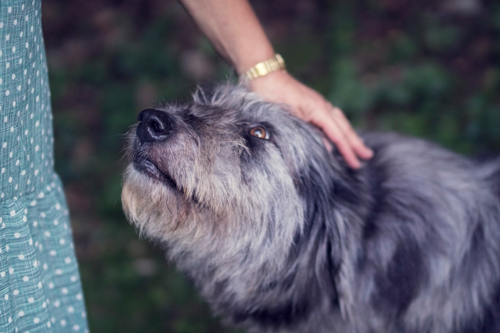
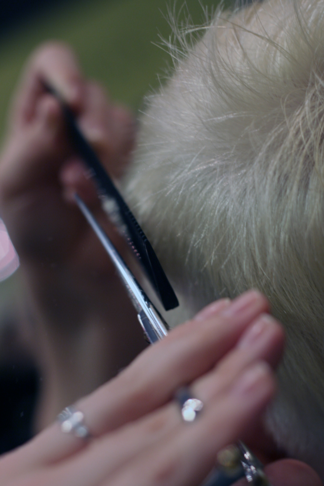
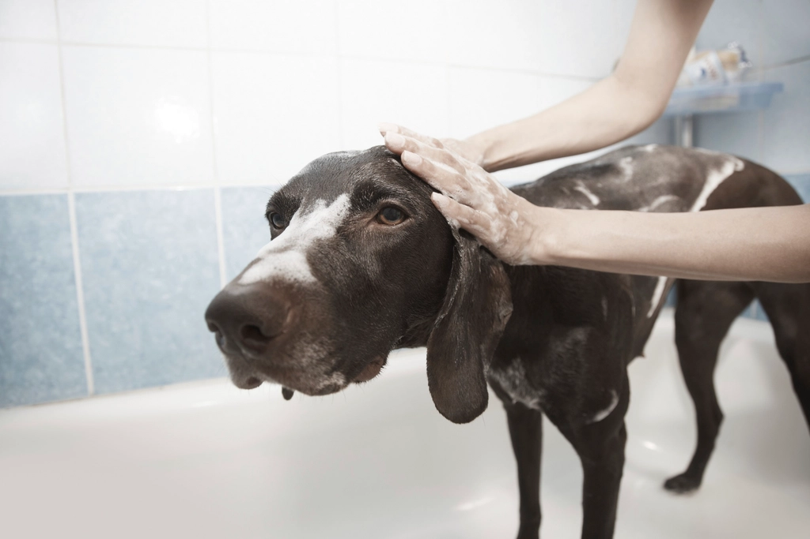
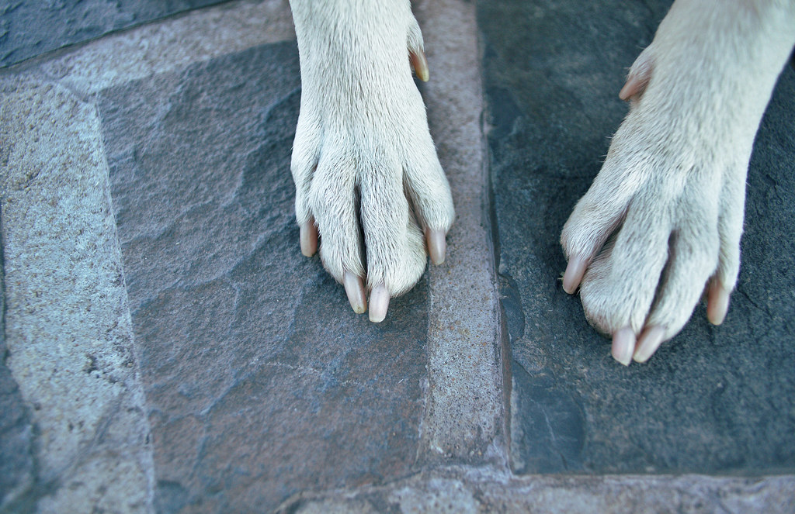
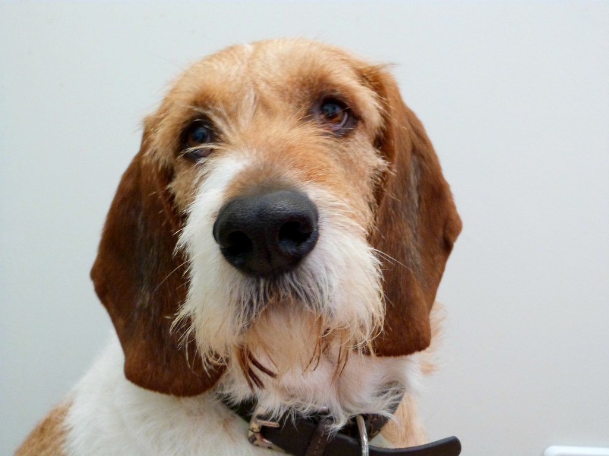

1
Step 1 / 問診・カウンセリング
ご来店後、まずは体調やご要望をゆっくりお伺いします。普段の様子や気になって いること、カットのご希望など、どんな内容でもお気軽にお話しください。
初めてご利用いただく方にも安心していただけるよう、wagでのトリミングの 流れをご紹介します。

ご来店後、まずは体調やご要望をゆっくりお伺いします。普段の様子や気になって いること、カットのご希望など、どんな内容でもお気軽にお話しください。

お伺いしたご要望を踏まえてトリミングを行いながら、皮膚や被毛の状態など 健康面もあわせて確認します。美容と健康、両方の視点で向き合います。


優しい香りのシャンプーで丁寧に洗い上げたあと、爪のヤスリがけまで妥協せず 仕上げます。細部までこだわった仕上がりをお届けします。

仕上がりをご確認いただいたうえでのお迎えとなります。施術中の様子や気に なった点があれば、このときにご説明いたします。
ありがたいことに、ご予約が先まで埋まってしまうこともございます。 ご希望の日程がございましたら、お早めにお電話でご相談ください。